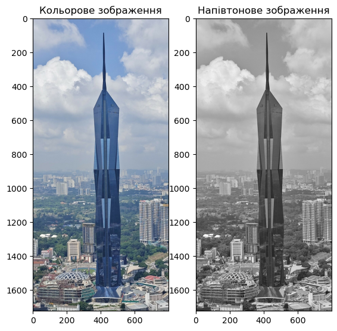
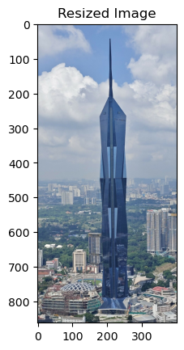
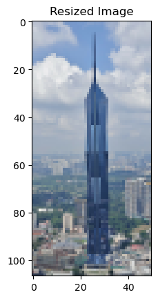
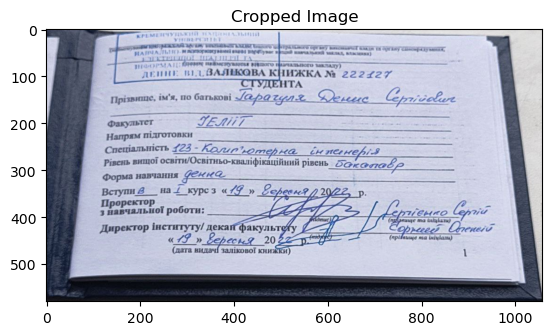
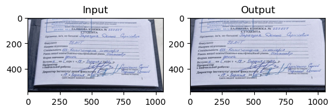
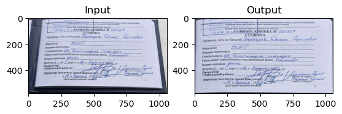

Code
# Імпортуємо пакети
import cv2 as cv
import numpy as np
import matplotlib.pyplot as plt
# print(f'version cv2: {cv.__version__}')
print('version cv2: %s' % cv.__version__)version cv2: 4.10.0Мета: знайомство з методами геометричних перетворень бібліотеки OpenCV у середовищі Anaconda із застосуванням Jupyter Notebook засобами мови програмування Python.
Image з диску. Оцінити його розмір у пікселях \(N \times M\) та об’єм пам’яті, який він займає на диску.Image у напівтоновому форматі. Оцінити його розмір у пікселях та об’єм пам’яті, який він займає на диску. Порівняти результати з попередніми результатами. Пояснити результати.# Імпортуємо пакети
import cv2 as cv
import numpy as np
import matplotlib.pyplot as plt
# print(f'version cv2: {cv.__version__}')
print('version cv2: %s' % cv.__version__)version cv2: 4.10.0import cv2
import matplotlib.pyplot as plt
import os
# Завантажуємо RGB-зображення
image = cv2.imread('orig_images/Image.jpg')
cv2.imwrite('Image.png', image)
print(f'image shape/dimensions: {image.shape}')
print(f'image number of pixels: {image.size}')
print(f'image size: {os.stat('Image.png').st_size} bytes')
# Розділяємо зображення на канали
red, green, blue = cv2.split(image)
# Формуємо напівтонове зображення
image_grey = cv2.imread('orig_images/Image.jpg', cv2.IMREAD_GRAYSCALE)
cv2.imwrite('grey_Image.png', image_grey)
print(f'grey image shape/scale: {image_grey.shape}')
print(f'grey image number of pixels: {image_grey.size}')
print(f'grey image size: {os.stat('grey_Image.png').st_size} bytes')
# Візуалізуємо зображення засобами Matplotlib
plt.figure(figsize=(10, 10))
plt.subplot(131)
plt.imshow(cv2.cvtColor(image, cv2.COLOR_BGR2RGB))
plt.title('Кольорове зображення')
plt.subplot(132)
plt.imshow(image_grey, cmap='gray')
plt.title('Напівтонове зображення')
plt.show()image shape/dimensions: (1724, 800, 3)
image number of pixels: 4137600
image size: 2356221 bytes
grey image shape/scale: (1724, 800)
grey image number of pixels: 1379200
grey image size: 824105 bytes
Image у \(n\) разів, візуалізувати його, перевіривши результат масштабування, та експортувати його на диск. Чи змінився об’єм пам’яті, який він займає на диску? Обгрунтувати отриманий результат.import cv2
import math
import matplotlib.pyplot as plt
import os
# Завантажуємо RGB-зображення
image = cv2.imread('orig_images/Image.jpg')
cv2.imwrite('Image.png', image)
print(f'image shape/dimentions: {image.shape}')
print(f'image number of pixel: {image.size}')
print(f'image size: {os.stat('Image.png').st_size} bytes')
# Визначаємо новий розмір
rows, cols = image.shape[:2]
rows_resized = (math.floor(cols * 0.5), math.floor(rows * 0.5))
# Змінюємо розмір зображення
image_resize = cv2.resize(image, rows_resized, interpolation=cv2.INTER_AREA)
cv2.imwrite('resized_Image.png', image_resize)
print(f'ress image shape/dimentions: {image_resize.shape}')
print(f'ress image number of pixel: {image_resize.size}')
print(f'ress image size: {os.stat('resized_Image.png').st_size} bytes')
# Візуалізуємо результат за допомогою Matplotlib
plt.imshow(cv2.cvtColor(image_resize, cv2.COLOR_BGR2RGB))
plt.title('Resized Image')
plt.show()image shape/dimentions: (1724, 800, 3)
image number of pixel: 4137600
image size: 2356221 bytes
ress image shape/dimentions: (862, 400, 3)
ress image number of pixel: 1034400
ress image size: 638606 bytes
Отже, зменшене зображення має відповідно меньше пікселів і важить меньше порівняно з оригінальним зображенням
import cv2
import math
import matplotlib.pyplot as plt
def refactorTo(image, width):
#curWidth = image.shape[1]
# Визначаємо новий розмір
rows, cols = image.shape[:2]
rows_resized = (math.floor(width), math.floor(rows / cols * width))
return cv2.resize(image, rows_resized, interpolation=cv2.INTER_AREA)
# Завантажуємо RGB-зображення
image = cv2.imread('orig_images/Image.jpg')
print(f'image shape/dimentions: {image.shape}')
print(f'image number of pixel: {image.size}')
user_width = int(input("Введіть бажану ширину: "))
# Змінюємо розмір зображення
image_resize = refactorTo(image, user_width)
cv2.imwrite('resized_to_K_Image.png', image_resize)
print(f'ress image shape/dimentions: {image_resize.shape}')
print(f'ress image number of pixel: {image_resize.size}')
# Візуалізуємо результат за допомогою Matplotlib
plt.imshow(cv2.cvtColor(image_resize, cv2.COLOR_BGR2RGB))
plt.title('Resized Image')
plt.show()image shape/dimentions: (1724, 800, 3)
image number of pixel: 4137600Введіть бажану ширину: 50ress image shape/dimentions: (107, 50, 3)
ress image number of pixel: 16050
import cv2
import matplotlib.pyplot as plt
# Завантажуємо RGB-зображення
image = cv2.imread('orig_images/salikova.jpg')
print(f'image shape/dimentions: {image.shape}')
print(f'image number of pixel: {image.size}')
# Вирізаємо діапазон пікселів
image_cropped = image[150:730, 128:1186]
print(f'image shape/dimentions: {image_cropped.shape}')
print(f'image number of pixel: {image_cropped.size}')
cv2.imwrite('cropped_salikova.png', image_cropped)
# Візуалізуємо результат за допомогою Matplotlib
plt.imshow(cv2.cvtColor(image_cropped, cv2.COLOR_BGR2RGB))
plt.title('Cropped Image')
plt.show()image shape/dimentions: (835, 1280, 3)
image number of pixel: 3206400
image shape/dimentions: (580, 1058, 3)
image number of pixel: 1840920
rows, cols, ch = image_cropped.shape
points_input = np.float32( # три вхідних точки
[
[72, 0],
[987, 15],
[529, 580]
]
)
points_output = np.float32( # три вихідних точки
[
[0, 0],
[1058, 0],
[529, 580]
]
)
# Задаємо матрицю афінних перетворень 2 х 3
M_affine_trans = cv.getAffineTransform(points_input, points_output)
# Трансформуємо зображення
image_affine_trans = cv.warpAffine(image_cropped, M_affine_trans, (cols, rows))
cv2.imwrite('affine_trans_salikova.png', image_affine_trans)
plt.subplot(121)
plt.imshow(cv2.cvtColor(image_cropped, cv2.COLOR_BGR2RGB))
plt.title('Input')
plt.subplot(122)
plt.imshow(cv2.cvtColor(image_affine_trans, cv2.COLOR_BGR2RGB))
plt.title('Output')
plt.show()
salikova = cv2.imread('cropped_salikova.png')
points_input = np.float32(
[
[100, 0],
[50, 530],
[965, 15],
[1025, 535]
]
)
points_output = np.float32(
[
[0, 0],
[0, 580],
[1058, 0],
[1058, 580]
]
)
M = cv.getPerspectiveTransform(points_input, points_output)
# Трансформуємо зображення
perspective = cv.warpPerspective(salikova, M, (1058, 580))
cv2.imwrite('perspective_trans_salikova.png', perspective)
plt.subplot(121)
plt.imshow(cv2.cvtColor(salikova, cv2.COLOR_BGR2RGB))
plt.title('Input')
plt.subplot(122)
plt.imshow(cv2.cvtColor(perspective, cv2.COLOR_BGR2RGB))
plt.title('Output')
plt.show()